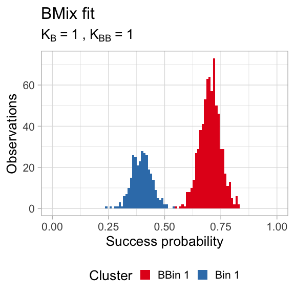
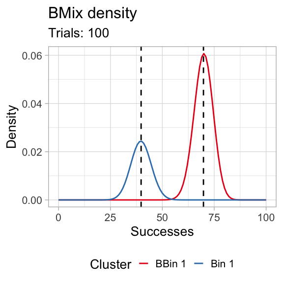
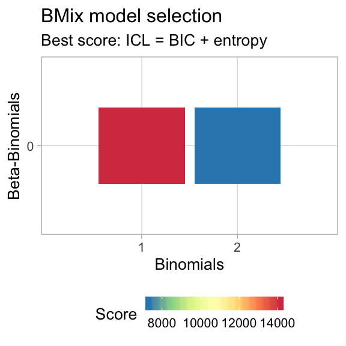
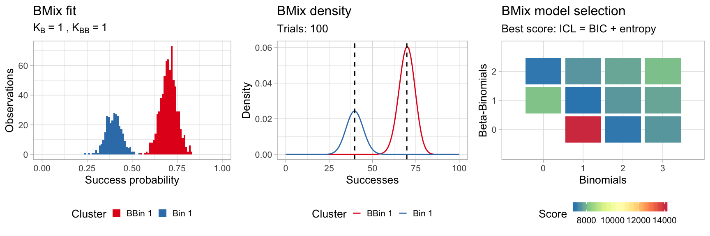
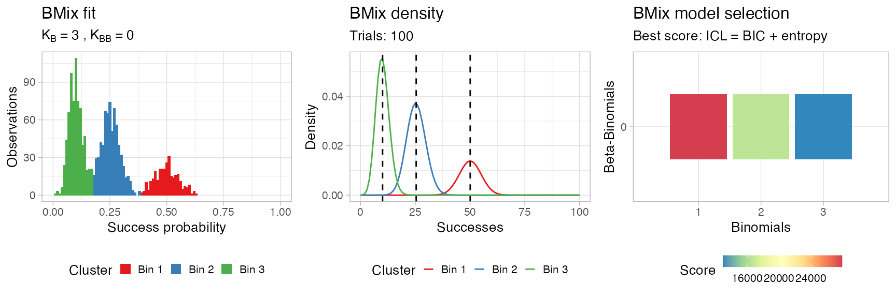
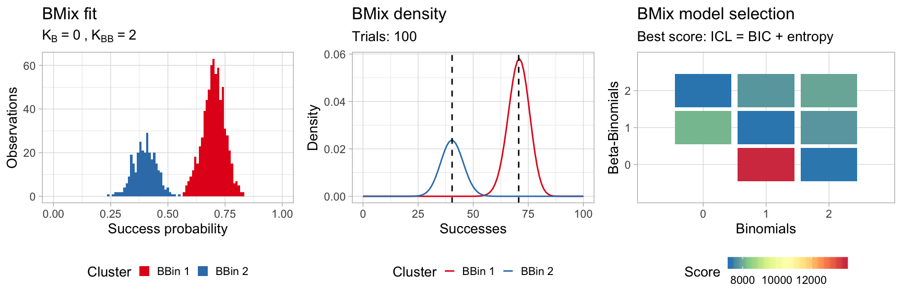

library(BMix)
#> [ BMix - Binomial and Beta-Binomial mixture models ]
#> Author : Giulio Caravagna <gcaravagn@gmail.com>
#> GitHub : caravagn/BMix
#> WWW : https://caravagn.github.io/BMix/
#>
#> > BMix is part of the "evoverse" [https://bit.ly/2orn94e] - a collection of packages to implement Cancer Evolution analyses from cancer sequencing data.We generate some simple data, obtained from two Binomial mixture components with success probability \(40\%\) and \(70\%\), and mixing proportions \(30\%\) and \(70\%\); the number of trials is fixed to \(100\).
data = data.frame(
successes = c(
rbinom(300, 100, .4), # First component - 300 points, peak at 0.4
rbinom(700, 100, .7)), # Second component - 700 points, peak at 0.7
trials = 100)
print(head(data))
#> successes trials
#> 1 34 100
#> 2 42 100
#> 3 37 100
#> 4 37 100
#> 5 43 100
#> 6 36 100Fitting is done with function bmixfit, the default parameters test a number of configurations of Binomial components, but sets to \(0\) the number of Beta-Binomial components.
# Default parameters
x = bmixfit(data)
#> [ BMix ~ Fitting data ]
#> Total number of runs: 4
#>
#> Run # | Samp. # | Binom. | Beta-Binom. | Conv. | ICL
#> ------------------------------------------------------------------------------
#> 1/4 | 1 | 1 | 0 | OK | 13991.5626000152 *
#> 2/4 | 2 | 1 | 0 | OK | 13989.0152614422 *
#> 3/4 | 1 | 2 | 0 | OK | 7199.72956597305 *
#> 4/4 | 2 | 2 | 0 | OK | 7246.468
#>
#> *** Best with ICL: 7199.73
#>
#> BMix model with K = 2 components: 2 Binomials and 0 Beta-Binomials.
#>
#> Binomials
#> Bin 1 Bin 2
#> 0.3983911 0.7010961
#>
#> Beta-Binomials
#> NULL
#>
#> ICL: 7199.73The fit is an object of class bmix which has S3 methods available.
print(x)
#> BMix model with K = 2 components: 2 Binomials and 0 Beta-Binomials.
#>
#> Binomials
#> Bin 1 Bin 2
#> 0.3983911 0.7010961
#>
#> Beta-Binomials
#> NULL
#>
#> ICL: 7199.73Beware that in Bmix the input data is not stored inside the fit, so all the functions that require the data to make computations are required to receive the input data as a parameter. Do not change that data because the package is not doing any check about the input.
You have getters to access the clusters (as tibble) and the fit parameters.
# Augment data with cluster labels and latent variables
Clusters(x, data)
#> # A tibble: 1,000 x 5
#> successes trials cluster `Bin 1` `Bin 2`
#> <int> <dbl> <chr> <dbl> <dbl>
#> 1 34 100 Bin 1 1.000 1.80e-11
#> 2 42 100 Bin 1 1.000 5.58e- 7
#> 3 37 100 Bin 1 1.000 8.70e-10
#> 4 37 100 Bin 1 1.000 8.70e-10
#> 5 43 100 Bin 1 1.000 2.03e- 6
#> 6 36 100 Bin 1 1.000 2.39e-10
#> 7 40 100 Bin 1 1.000 4.21e- 8
#> 8 31 100 Bin 1 1.000 3.72e-13
#> 9 36 100 Bin 1 1.000 2.39e-10
#> 10 36 100 Bin 1 1.000 2.39e-10
#> # … with 990 more rows
# Obtain for every fit component the mean and its overdispersion.
# Binomial components have 0 overdispersion by definition.
Parameters(x)
#> # A tibble: 2 x 3
#> cluster mean overdispersion
#> <chr> <dbl> <dbl>
#> 1 Bin 1 0.398 0
#> 2 Bin 2 0.701 0You can plot the clustering assignments (hard clustering).

You can plot the density, in frequency space. For this a number of trials needs to be fixed; by default BMix takes the median number of trials in the input data, but you can decide to use any other interger number.

You can visualise the result of the model selection grid as a heatmap; the best model is the one that minimizes the chosen score, which is by default the Integrated Classification Likelihood, an extension of the Bayesian Information Criterion that accounts for the entropy of the latent variables.

The S3 method plot assembles all these plots using the cowplot package.

If you want to test the same model with only Beta-Binomial components you can run function bmixfit as follows.
# Custom parameters
x = bmixfit(data,
K.Binomials = 0,
K.BetaBinomials = 1:2)
#> [ BMix ~ Fitting data ]
#> Total number of runs: 4
#>
#> Run # | Samp. # | Binom. | Beta-Binom. | Conv. | ICL
#> ------------------------------------------------------------------------------
#> 1/4 | 1 | 0 | 1 |
#> Loading required package: VGAM
#> Loading required package: stats4
#> Loading required package: splines
#> OK | 8123.11809638649 *
#> 2/4 | 2 | 0 | 1 | MLE error, forcing stop. OK | 8109.06741452445 *
#> 3/4 | 1 | 0 | 2 | OK | 7193.55587512506 *
#> 4/4 | 2 | 0 | 2 | MLE error, forcing stop. OK | 7296.412
#>
#> *** Best with ICL: 7193.556
#>
#> BMix model with K = 2 components: 0 Binomials and 2 Beta-Binomials.
#>
#> Binomials
#> NULL
#>
#> Beta-Binomials
#> BBin 1 BBin 2
#> mu 6.992050e-01 3.997514e-01
#> rho 1.252519e-08 5.179001e-12
#>
#> ICL: 7193.556
# Show outputs
print(x)
#> BMix model with K = 2 components: 0 Binomials and 2 Beta-Binomials.
#>
#> Binomials
#> NULL
#>
#> Beta-Binomials
#> BBin 1 BBin 2
#> mu 6.992050e-01 3.997514e-01
#> rho 1.252519e-08 5.179001e-12
#>
#> ICL: 7193.556
plot(x, data)
You can also decide to test models in which both type of components are present.
# Custom parameters
x = bmixfit(data,
K.Binomials = 0:2,
K.BetaBinomials = 0:2)
#> [ BMix ~ Fitting data ]
#> Total number of runs: 16
#>
#> Run # | Samp. # | Binom. | Beta-Binom. | Conv. | ICL
#> ------------------------------------------------------------------------------
#> 1/16 | 1 | 1 | 0 | OK | 14071.7875676379 *
#> 2/16 | 2 | 1 | 0 | OK | 14019.9623157933 *
#> 3/16 | 1 | 2 | 0 | OK | 7156.74580400557 *
#> 4/16 | 2 | 2 | 0 | OK | 7203.333
#> 5/16 | 1 | 0 | 1 | OK | 8123.049
#> 6/16 | 2 | 0 | 1 | MLE error, forcing stop. OK | 8108.409
#> 7/16 | 1 | 1 | 1 | OK | 7200.331
#> 8/16 | 2 | 1 | 1 | OK | 7127.67296069306 *
#> 9/16 | 1 | 2 | 1 | OK | 7678.57
#> 10/16 | 2 | 2 | 1 | OK | 7627.45
#> 11/16 | 1 | 0 | 2 | MLE error, forcing stop. OK | 7273.037
#> 12/16 | 2 | 0 | 2 | MLE error, forcing stop. OK | 7265.215
#> 13/16 | 1 | 1 | 2 | OK | 7673.634
#> 14/16 | 2 | 1 | 2 | OK | 7667.998
#> 15/16 | 1 | 2 | 2 | OK | 7857.529
#> 16/16 | 2 | 2 | 2 | OK | 7898.257
#>
#> *** Best with ICL: 7127.673
#>
#> BMix model with K = 2 components: 1 Binomials and 1 Beta-Binomials.
#>
#> Binomials
#> Bin 1
#> 0.7014894
#>
#> Beta-Binomials
#> BBin 1
#> mu 3.991930e-01
#> rho 5.179001e-12
#>
#> ICL: 7127.673
# Show outputs
print(x)
#> BMix model with K = 2 components: 1 Binomials and 1 Beta-Binomials.
#>
#> Binomials
#> Bin 1
#> 0.7014894
#>
#> Beta-Binomials
#> BBin 1
#> mu 3.991930e-01
#> rho 5.179001e-12
#>
#> ICL: 7127.673
plot(x, data)